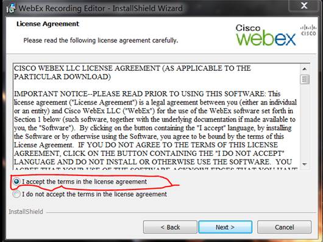
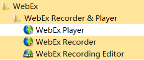
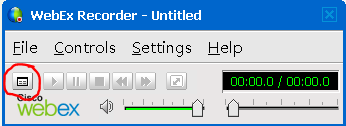
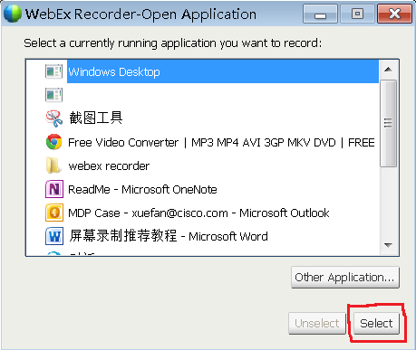
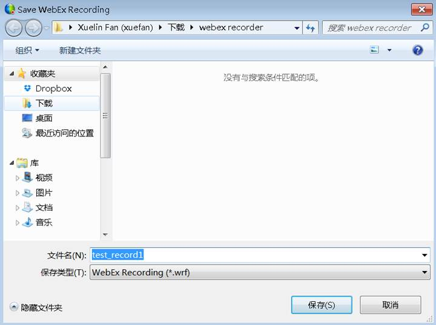
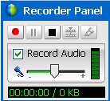
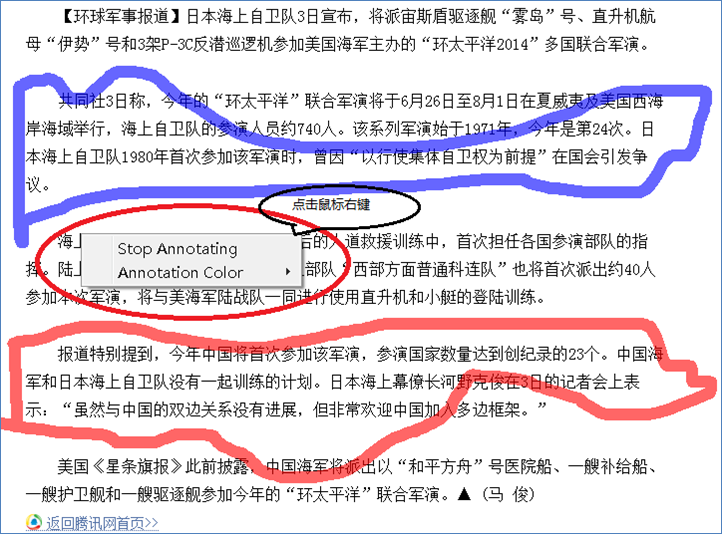
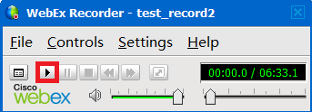
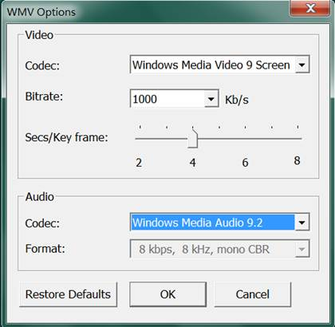

屏幕录制推荐教程
屏幕录制有很多软件，有专业收费的也有免费版的，今天我们介绍的是全球会议软件巨头WebEx公司的视屏录制软件，包括2个可执行安装软件：用于录制屏幕的软件和用于格式转换的软件，大家可以自己到WebEx公司网站自行下载或从这里镜像下载。
准备工作：
1.
下载WebEx相关软件
Ø
如何从WebEx网站下载，请参考
・
WebEx视频编辑软件(格式转换成WMV)
http://www.question-defense.com/wp-content/uploads/2010/05/ateditor-version-3.0.zip
・
转换成其他视频格式
可以使用AnyConvert专业转换视频格式。(http://www.freemake.com/free_video_converter/ ) 或者使用 VLC media
player来转换 (以下教程以VLC media player来说明格式转换)
2.
安装WebEx录制软件atrecply.exe和视频编辑软件ateeditor.exe
两个文件都是英文软件，在安装过程中会提示接受WebEx协议，如下图，请选择红色框框内选项。

两个软件安装完成后会在开始菜单中有如下程序选项：

屏幕录制
屏幕录制，步骤如下图

图1 打开WebEx Recorder
(运行: WebEx
Recording程序，如下图1，点击红圈部分，这是用来选择需要录制什么程序的界面(下图
2)，默认是 “Windows Desktop”， 也可以选择其他程序(例如我只想录制我PPT幻灯片中的内容，其他程序的界面内容不想录制))

图2 选择要录制的程序

图3: 输入录制文件要保存的文件路径名称

图4:
录制功能控制面板 (点击红色圆点即开始录制，点击 暂停录制，点击
停止录制，点击
可以在当前屏幕添加注解文字)

图5 点击
在当前屏幕添加注解文字 (添加好之后，点击鼠标右键，可以弹出活动菜单，选择”Stop Annotating”即可返回录屏功能界面
)

图6， 点击
录屏结束，此时点击红色方框内播放按钮可以播放查看，保存下载的文件时WRF格式文件
转换文件格式
刚录制好的屏幕视频文件时WRF文件，这是WebEx特有的文件格式，需要转换，分成两步。
1.
将录制文件转成WMV格式。打开程序“WebEx Recording
Editor”， 并且打开上面录制的WRF格式文件，然后点击“FileàExport to…”，在弹出窗口中指定要保存的文件名，格式只能是WMV格式。


(这里Video 的codec默认是: “Windows Media
Video 9 Screen”，如果录制的过程中有播放别的视频文件，推荐选择”Windows Media
Video 9”)
2. 将WMV格式转成任意格式文件，并且可以自由编辑。这里我们推荐的软件是“Free Video Convert”， 下载并安装。转换基本流程是选择源文件，选择要转换的目标格式，然后转换，详细教程，请参考：http://www.freemake.com/how_to/free_wmv_converter